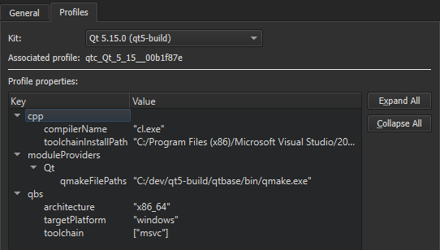

Qbs
By default, Qbs profiles are stored in the qbs directory in the Qt Creator settings directory to ensure that different Qt Creator instances do not overwrite each other's profiles. If you only run one Qt Creator instance, you can store the profiles in the Qbs settings directory instead.
To specify settings for Qbs:
- Select Preferences > Qbs.

- Deselect the Use Qt Creator settings directory for Qbs check box to store Qbs profiles in the Qbs settings directory.
- In the Path to qbs executable field, you can view and change the path to the Qbs executable. The Qbs version field displays the version number of the executable.
- In the Default installation directory field, you can view and change the Qbs installation directory.
- Select the Profiles tab to specify settings for Qbs profiles.

- In the Kit field, select a build and run kit to view the properties of the associated profile. To modify the properties, select Preferences > Kits. For more information, see Edit Qbs profiles.
See also Open projects, Build Systems: Qbs, Qbs Build Configuration, and Specifying Run Settings.